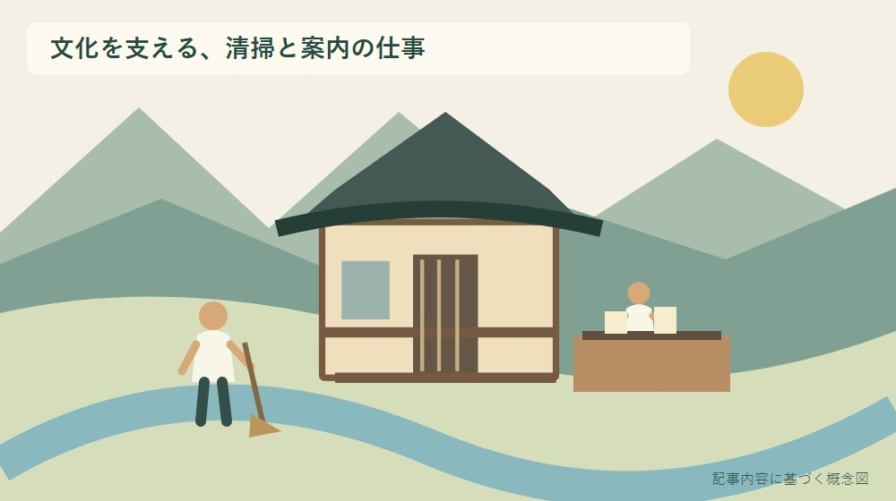
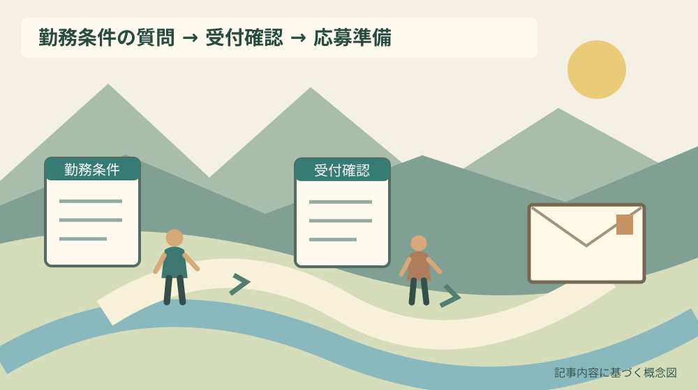

小國神社の巫女募集｜森町で文化を支える仕事

Q. 小國神社の巫女募集は、どんな仕事で、どう応募しますか？
A. 小國神社は2026年9月11日付で巫女の正職員1名募集を掲載しています。祭典の奉仕・補助、授与品の管理、参拝者案内、清掃、事務補助などが仕事です。写真付き履歴書を社務所の巫女採用係へ郵送します。給与・勤務時間・休日・締切は本文に記載がないため、募集の継続状況と併せて総務部0538-89-7302へ確認してください。
文化を支える仕事を、日々の作業から読む
小國神社の巫女募集を読むと、祭典の奉仕だけでなく、境内や社殿の清掃、授与品の管理、事務補助が仕事に含まれています。参拝者が目にする静かな境内や整った授与所には、日々手を動かす人の労力があります。応募を考える際は、その仕事の全体を見たいと思います。
大石浩之（磐田市／不動産業）です。私は、伝統文化に関わりたいという気持ちと、生活を続けられる勤務条件を、どちらも大切にしてよいと考えます。関心があるからこそ、清掃、案内、通勤、休日まで具体的に確かめてから応募の判断をする順番を勧めます。
この記事は2026年9月30日に確認した小國神社の募集本文をもとにしています。採用を仲介する記事ではなく、現在の残り募集枠も確認できていません。掲載された仕事内容と、応募前に聞きたい条件を分け、自分の質問を一つ作るための案内です。
事実整理｜9月11日付、正職員1名の募集
小國神社のお知らせは、2026年9月11日付で巫女の正職員1名を募集しています。勤務地は静岡県周智郡森町一宮3956-1です。「1名」は掲載時の募集人数で、2026年9月30日時点で必ず一枠残っていることを示す数字ではありません。
奉務内容は、巫女舞などの祭典の奉仕・補助、御神札や御守りの授与・管理、参拝者の案内、境内と社殿の清掃、社務の事務補助、その他神社の運営に関わる業務です。舞を習うことだけを仕事内容と受け取らないよう、日常の作業にも目を通します。
募集本文の応募資格には「18歳以上の未婚女性」とあり、中途採用も歓迎すると記されています。これは発信主体が掲げる条件の紹介です。この記事で適格性や個別の採否を判断するものではありません。自分が条件に当てはまるか不明な点は、採用担当へ確認してください。
求める人物像には、丁寧な会話、身だしなみ、年末年始や祭典時の奉仕などへの言及があります。一方、具体的な勤務時間帯や休日数は本文にありません。繁忙期という言葉から、働く日数や連続勤務の形まで想像で補わないようにします。
応募方法は、市販の履歴書に写真を貼り、必要事項を記して郵送する流れです。送り先は〒437-0226、静岡県周智郡森町一宮3956-1、小國神社社務所「巫女採用係」です。面接日時は追って連絡されると説明されています。
問い合わせ先は小國神社総務部、0538-89-7302です。受付時間は午前9時から午後5時です。この時間は電話の受付時間であって、採用後の勤務時間を示すものではありません。二つを混同すると、応募の前提が変わってしまいます。
授与、清掃、事務を一つの勤務として考える
小國神社の募集では、人前に出る奉仕と、境内や社務を整える仕事が一つの職務に含まれます。清掃は付け足しの仕事としてではなく、募集内容の一項目として明記されています。表に出る場面だけを切り取らないことが、仕事を理解する最初の段階です。
私なら、仕事内容を読んで「経験があること」「学びたいこと」「具体像を聞きたいこと」に分けます。例えば接客に関心があっても、授与品の管理は未経験かもしれません。できると断言するより、何を学ぶ必要があるかを言葉にする方が、自分にも説明しやすくなります。
清掃について知りたい場合は、担当する範囲や道具、日常の作業の流れを質問候補にできます。作業量や体力負担をこの記事から推測することはできません。自分の体調や通勤条件と合わせて、無理なく続けるために必要な情報を確かめる姿勢です。
参拝者への案内も、ただ明るく話すだけで内容が決まる仕事ではありません。どのような事項を覚えるのか、分からない質問を誰へつなぐのかは、仕事を始める側が知りたい点です。研修の具体的な仕組みは本文にないため、質問として準備する段階にとどめます。
森町の文化資料と、今回の募集を混ぜない
森町の「文化財」ページには、小國神社十二段舞楽が国指定の民俗文化財として掲載されています。小國神社が森町の文化を考えるうえで欠かせない場所であることを確認できます。ただし、その指定は、今回の採用者が担当する舞や役割を決める資料ではありません。
町の「小國・天宮両社の舞楽」には、両社の装束や所作の違いなどが写真とともに紹介されています。似た名称の舞でも内容を一括りにしないための資料です。求人本文にある巫女舞と、町が紹介する十二段舞楽を、同じ業務だと断定しないようにします。
私は、文化への関心を志望動機にするなら、資料を読んだことと、実際にできることを区別したいと考えます。歴史を知っただけで奉仕の経験があるとは言えません。未経験の部分を隠すより、どの仕事から学びたいかを具体的に書く方が、自分の言葉になります。
祭りや文化を支える人の準備と片付けについては、森町の祭りを支える担い手の記事でも扱っています。地域の協力と雇用される仕事は条件が異なりますが、華やかな時間の外側に労力がある点へ目を向ける参考になります。
良い点｜仕事の幅と応募の入口が示されている
小國神社の募集の良い点は、祭典だけでなく、案内、清掃、管理、事務まで業務の幅を示していることです。応募する側が、巫女という職名の印象だけで決めずに済みます。関心のある仕事と、具体的に聞きたい仕事を分ける材料になります。
写真付き履歴書の郵送先と、その後に面接日時が連絡される流れも確認できます。最初に何を送るのかが分かるため、準備の順序を考えられます。指定されていないメール応募や、突然の持参でも同じように受け付けられるとは読み替えません。
中途採用への言及がある点は、すでに別の仕事を経験している人にも検討材料になります。ただし、これまでの勤務歴がどのように評価されるか、入職時期を調整できるかは別の問いです。歓迎という表現だけで、個別条件の合意まで済んだとは扱いません。
私は、職務内容を読んで質問を準備できることを、応募側と採用側の双方にとって良い点と考えます。漠然と「条件を教えてください」と聞くより、勤務時間か休日か、最初に確認したい一項目を示せば、説明を受ける目的がはっきりします。
注文したい点｜給与、勤務時間、休日の空欄は残る
小國神社の募集本文には、給与額、勤務時間、休日数、応募締切が記載されていません。待遇の詳細は選考過程で説明するとあります。この記事が他の求人や一般的な相場から数字を足すことはしません。自分の生活に必要な条件は、選考の前後で確かめる項目です。
私は、仕事の魅力が伝わる案内だからこそ、応募する側が生活条件を確認できる機会も欲しいと考えます。文化への関心と、毎月の収入や休みの必要は両立します。条件を尋ねることを、奉仕への意欲が弱い証拠のように自分で受け取る必要はありません。
職員互助会や年1回の研修旅行、健康診断などの記載はあります。ただし、福利厚生の項目があることと、給与や労働時間が分かることは別です。利用条件や費用負担を含め、自分が判断に使う事項は説明の際に確かめてください。
森町の仕事探しと最低賃金の記事は、求人条件を読む際の別の入口です。そこにある制度の情報から、小國神社の給与額を計算して確定することはできません。今回の雇用条件は、採用担当の説明で確認する必要があります。
通勤と繁忙期を、自分の生活の予定に戻す
小國神社で働くことを検討する人は、森町一宮3956-1への通勤を、実際の勤務時刻が分かってから確認します。参拝に行ける時間と、出勤に間に合う時間は違います。休日の一度の訪問だけで、毎日の移動が成立すると決めないようにします。
小國神社への秋のバス運行を確認する記事では、利用日の確認を扱っています。参拝向けの運行情報があっても、全勤務日の通勤に使えるとは限りません。自分の始業・終業時刻、運行日、帰りの便を組にして見る必要があります。
家族の送迎を頼む場合は、頼める曜日と難しい曜日を分けます。採用が決まってから毎日の送迎を初めて相談すると、家族の仕事や用事と衝突する可能性があります。今日は「自分で移動できない時間帯」を一つ書き出し、勤務条件を聞く材料にできます。
年末年始や祭典時の奉仕への言及を読んだら、自分が動けない日や調整が必要な予定を確認します。具体的な勤務割は未確認なので、勝手に休めない日を決めつけません。採用側へ伝えるべき事情と、説明を聞いてから判断する事項を分けておきます。

対案・結論｜応募前に聞きたい条件を一つ書く
小國神社の巫女募集に関心がある人が今日できる行動は、応募前に聞きたい勤務条件を一つ書くことです。「通常日の始業と終業は何時ですか」「休日はどう決まりますか」など、自分の暮らしの予定に戻せる質問を選びます。すぐに応募を決めなくても構いません。
問い合わせる際は、2026年9月11日付の巫女募集を見たことを伝え、現在も応募を受け付けているかを確認します。残りの枠を推測しながら急ぐより、まず受付の状況を確かめる順序です。電話の受付は9時から17時と案内されています。
勤務条件をすべて電話で回答してもらえるかは分かりません。選考時に説明する事項と言われた場合は、どの段階で確認できるのかを聞き、その説明を受けてから判断する余地を残します。聞けなかった項目は、解決済みにせず自分のメモへ持ち越します。
応募する場合は、履歴書の宛先、写真、連絡先、志望動機を確認します。特別な知識や経験を作って書く必要はありません。伝統文化に興味を持った理由と、清掃や案内を含む仕事をどう学びたいかを、自分の言葉で記す準備をします。
選考の記録｜募集の内容と説明された条件を分ける
小國神社への応募記録には、見た募集ページ、確認した日、連絡した日、説明を受けた条件を分けて残します。公開ページに書かれていたことと、個別に聞いた話を混ぜないためです。仕事の条件を家族へ説明する際にも、どこまで確認したかが伝わります。
履歴書の発送日と控えを残すと、問い合わせや面接準備に戻りやすくなります。ただし、写真や住所などの個人情報を含む書類を、家族の大きな共有グループへ送る必要はありません。相談に必要な勤務条件と、応募書類そのものの保管を分けてください。
面接日時の連絡を待つ間に、未確認の条件を整理できます。給与、勤務時間、休日、通勤、入職時期などのうち、判断に必要な順に並べます。質問を用意することは、採用を前提に約束することとは違います。説明を聞いてから自分に合うか考えます。
募集本文には応募書類を返却できない旨も記載されています。郵送前に自分用の控えを残し、送付する書類を確認してください。この記事から別の証明書まで必要だと判断せず、追加書類を求められた場合は、その内容と提出先を採用担当へ確かめます。
大石の視点｜憧れだけで勤務条件の空欄を埋めない
私は、憧れだけで勤務条件の空欄を埋めません。神社を支える仕事に魅力を感じることと、収入、休日、移動を確かめることは、同じ判断の中にあります。働く人が生活を続けられる条件を知ることは、文化を支える担い手を軽く扱わない姿勢でもあります。
私なら、募集本文を開きながら、別の紙に通勤に使える時間帯を書きます。これは実際の応募相談の再現ではなく、私の考えです。勤務時刻が分からない間は予定を完成させず、採用担当へ聞く質問を一つ残す。その方が、後から家族へ無理を頼まずに済みます。
一方で、条件を細かく聞くことで応募の気持ちが伝わりにくくならないか、ためらう人の気持ちも分かります。私にも、質問の量と順番には迷いがあります。最初から全項目を一気に尋ねず、受付状況と、自分に欠かせない条件一つから始める方法を勧めます。
まとめ｜支える仕事の中身と、続けられる条件を知る
小國神社の巫女募集は、祭典、授与、案内、清掃、事務などを含む正職員の募集です。9月11日付の掲載は確認できましたが、現在の残り枠や締切は未確認です。まず総務部0538-89-7302へ受付状況を確かめ、必要な勤務条件を聞いてください。
今日の成果は、応募を決めることだけではありません。清掃を含む仕事内容を理解し、自分が聞きたい条件を一つ言えるようになることも前進です。説明を受けてから決める自由を残しながら、文化を支える仕事との向き合い方を考えます。
よくある質問
小國神社の巫女募集について、仕事内容と応募条件を確認します。
どんな仕事を担当する募集ですか？
小國神社の募集は巫女の正職員で、祭典の奉仕・補助、御神札や御守りの授与・管理、参拝者案内、境内・社殿の清掃、事務補助などが含まれます。舞だけを担当する募集とは記載されていません。2026年9月11日付の募集人数は1名ですが、現在の受付状況と具体的な担当範囲は採用担当へ確認してください。
応募方法と問い合わせ先はどこですか？
写真付き履歴書を、〒437-0226、静岡県周智郡森町一宮3956-1、小國神社社務所「巫女採用係」へ郵送する方法が案内されています。面接日時は追って連絡されます。問い合わせは総務部0538-89-7302、受付9時〜17時です。郵送前に募集の継続状況を確かめ、宛先と連絡先を確認してください。
給与、勤務時間、休日、締切は分かりますか？
2026年9月30日に確認した募集本文には、給与額、勤務時間、休日数、応募締切の記載はありません。待遇の詳細は選考過程で説明するとされています。電話受付の9時〜17時を勤務時間と解釈しないでください。自分の判断に必要な条件を一つ書き、説明を受けられる段階も含めて採用担当へ確認します。
実家の建物や管理の情報を整理する場合は、実家カルテも利用できます。売却未定でも使える本サイト運営会社の民間サービスです。森町や各施設の公式手続ではなく、利用は任意です。
公式情報源
2026年9月30日確認（2026年9月確認）。開催・受付・公開状況や数値は変わる場合があります。行動前に公式案内を確認し、個別の税務・契約・工事などの判断は担当窓口や専門家に相談してください。